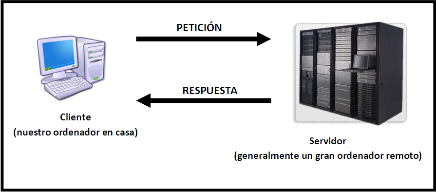

Comunicacion Cliente y Servidor
Este modelo es uno de los principales usados en muchísimos servicios y protocolos de Internet, por lo que para todos aquellos que quieren aprender más sobre la web y cómo funciona, entender el concepto de modelo cliente servidor se vuelve algo indispensable.
graph LR;
A[Servidor] -->|Comunica| B(Internet)
B --> C{Envía}
C -->|1| D[Cliente]
C -->|2| E[Cliente]
-Importancia del modelo cliente servidor:
La arquitectura cliente servidor tiene dos partes claramente diferenciadas, por un lado la parte del servidor y por otro la parte de cliente o grupo de clientes donde lo habitual es que un servidor sea una máquina bastante potente con un hardware y software específico que actúa de depósito de datos y funcione como un sistema gestor de base de datos o aplicaciones.
En esta arquitectura el cliente suele ser estaciones de trabajo que solicitan varios servicios al servidor, mientras que un servidor es una máquina que actúa como depósito de datos y funciona como un sistema gestor de base de datos, este se encarga de dar la respuesta demandada por el cliente.

-Componentes:
-Red: Una red es un conjunto de clientes, servidores y base de datos unidos de una manera física o no física en el que existen protocolos de transmisión de información establecidos.
-Cliente: El concepto de cliente hace referencia a un demandante de servicios, este cliente puede ser un ordenador como también una aplicación de informática, la cual requiere información proveniente de la red para funcionar.
-Servidor: Un servidor hace referencia a un proveedor de servicios, este servidor a su vez puede ser un ordenador o una aplicación informática la cual envía información a los demás agentes de la red.
-Protocolo: Un protocolo es un conjunto de normas o reglas y pasos establecidos de manera clara y concreta sobre el flujo de información en una red estructurada.
-Servicios: Un servicio es un conjunto de información que busca responder las necesidades de un cliente, donde esta información pueden ser mail, música, mensajes simples entre software, videos, etc.
-Base de datos: Son bancos de información ordenada, categorizada y clasificada que forman parte de la red, que son sitios de almacenaje para la utilización de los servidores y también directamente de los clientes.